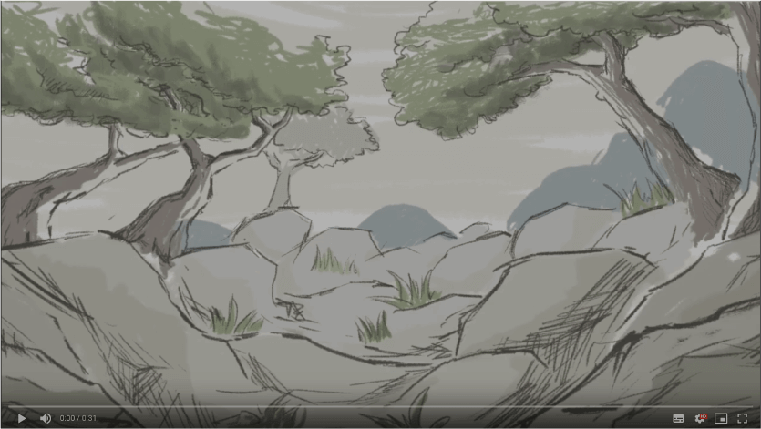

「龍崎」因其國際級的地質學環境，崎嶇不平的泥岩地貌而被命名；其中的虎形山因特殊的地景而有「龍盤虎踞」的稱號。18世紀以降就開始發展的聚落帶來了人文底蘊，都是龍崎區珍貴的資產。
龍崎絕美遼闊的自然景觀、惡地地形，以及人口逐漸外移的趨勢，成為了人們眼中山高人稀的象徵，是陌生、不熟悉且少於接觸的鄉野。另一方面，近年來龍崎區在政府公所、里民的努力之上，也逐漸多了許多藝文方面的建設，成立了市集、貓咪階梯、竹炭故事館等…。「同樣一塊地，從農業生產價值來看或許是「惡地」，但從其他價值來看，卻是不折不扣的美地。」
龍崎區的曲折故事，反映著人類社會所共同面對的課題：「價值的選擇。」也造就了「龍崎光節」的誕生。
「光蟲」這件作品的藝術概念，不僅在於其只有在現地製作的在地性、必然與環境融合的融洽性；在那之上，是對「地方創生」概念的一種不離地的實踐藝術。藝術團隊與龍崎區的邂逅，開啟了龍崎「空山祭」的可能性。
Longci and Hu Xing Shan Park, one of the famous spots here, are known for their rather unique rugged chalk soil landforms. It is said that people relate these landforms to dragons and tigers and thus come up with these names ("Long" means "dragon," "ci" means "rugged," and "Hu Xing" actually means "tiger-shaped" in Chinese). Settlements were formed here since the 19th century, and they bring about precious histories and stories for Longci.
Astonishing natural scenery, rugged landform, combined with its lessening population, Longci gradually becomes the symbol of "void mountain." It is considered a classic mountainside village—a place we only know little about and not familiar with. But at the same time, there are more and more art-related projects here in the Longci district. The district office and the locals worked together and established the Longci Markets, "The stair of cats," and Longci Bamboo Charcoal, just to name a few.
"In terms of agriculture value, the lands here are quite worthless. But they are beautiful lands if we change our point of view."
The twists and turns of Longci's history imply the common issue we human beings have to face: the choice of value. Such history and choices are the origins of "Longci Light Festival."
「朝真暮偽何人辨，古往今來底事無。但愛臧生能詐聖，可知寧子解佯愚。草螢有耀終非火，荷露雖團豈是珠。不取燔柴兼照乘，可憐光彩亦何殊。」
―――白居易「放言五首、其一」
「空山祭」的發想單位，是由藝術家辛綺和策展人陳雋中及其他對藝術一頭熱的朋友們，於2016年成立的工作室。工作室正式名稱為「艸非火」。名稱的來由，乃因藝術家除自我表達的創作之外，更需去思考自己做為藝術史和整體人類社會性的定位，創作是一種橋梁，策展要連結虛實(精神性與物質)和古今。
詩首二句道盡藝術創作的虛實之「變」，次二句又闡明真假之「爭」；對應西洋藝術史上，由「洞穴寓言」到黑格爾的「藝術已死」精神性的永恆昇華。而「草螢有耀終非火，荷露雖團豈是珠」言下之意是螢火蟲發出光亮，但終究不是火；荷葉上的露珠渾圓，也並非珍珠(指出人會被外表所欺騙，而不能發現事物的內在)；其意衍伸到藝術上，藝術創作翻轉「真假、虛實」的能力，螢光非火但卻遠勝於火焰，能點燃人心。艸非火藝術團隊的「光蟲」，旨在創造出一片虛/實交錯的空間。結合藝術美學，和內在的精神性，使其「表裡如一」。
"Fireflies glow, yet they are not real fire,/ The round dew on lotus is far from pearl." Inspired from Bai Juyi’s Speaking Freely, the team tries to present the powerful aspect of artwork, which is to cross the borderline between true and false, real and unreal, and material and spiritual. In the world of art, the glow of fireflies is not fire, yet superior to it, for the glow is able to evoke people’s feelings. The Light Insect by the team is an attempt to create a world where truth and false being redefined, and with the arrangement of artworks and symbols, they would eventually mingle together.
藝術祭「龍崎光節」想做的，就是「價值的選擇：看見生命」。
這指的是看見生命的當下，我們已經擁有的、曾經建設的、龍崎的鄉民與政府攜手共同構築的「現在」。用一個藝術光節，一群投身藝術創作的熱血藝術家們的作品、和一個寓言故事「空空的山」，來傳達一個「看見」的訊息，不僅僅是看見龍崎，更是看見台灣。「空山祭」誕生在龍崎區這個台灣南部的小鎮，是因其精彩的故事和文化上深厚的底蘊。龍崎在垃圾掩埋場抗爭中，除了彰顯出台灣人民對自然的愛心外，同時也不斷讓更多前來的年輕老少「看見」這個地方的美：有自然生態的、有鄉土文化的，是具有普世價值的。而這整個故事，正適合由「空山祭」來做為最後一個註腳，和一個新的開端。
自網路發明已降，轟轟烈烈數十年的「全球化」，開始降溫；世界趨勢，是對身處鄉土的地緣性回歸。文化統一性、都市化的後繼無力，從世紀末到21世紀的交棒便顯端倪。取而代之的，是新的「地方」的誕生。新的「地方」概念，有別於過去的懷舊、鄉土、傳統，是一種地緣主義的「再發現」；地方文化的翻新、再認識，而藉由網路和各種媒體推向世界，其實也是全球化的一種「再定義」，「越本土化、就越國際化」。
What we hope to achieve through "Longci Light Festival" is to convey the concept "The Choice of Value: Seeing Life."
It means to focus on the very moment we are living, what we have now, what the government and people in Longci have accomplished before, and most important of all, the current moment of Longci. "Light Festival," the artworks by passionate artists, and the fabled tale "Void Mountain" are our message and hope toward every visitors. We want our visitors to "see" our life, Longci, and Taiwan.
Longci, as a little village in Southern Taiwan, does have some interesting stories and historic background, and this is why it becomes the perfect choice for "Light Festival." Once there was a protest against the construction of landfill, and such protest shows that Taiwanese people do care about and love our homeland. After the protest, more and more people, young or old, start visiting Longci and begin to "see" the beauty here. The beauty of wildlife and historic heritage/stories here are values celebrated by all kinds of people. "Void Mountain Festival" will be the next chapter of the dramatic and vigorous story of Longci. There will be a brand new start.
Since the invention of the Internet, the rampaging globalization seems to slow down now. The trend now is to return to our hometown instead of pursing the same value. Such trend has already existed since late 20th century, and now it grows even stronger and redefines our hometown/countryside.
No longer simply meaning nostalgic, tradition-oriented, The new concept of place/location is a geopolitical one. People renew and understand once again about their homelands and cultures, sharing them to the whole world through Internet or other forms of media. It is, at the same time, the redefining of globalization. We are now living in the era of glocalization.
「空山不見人，但聞人語響。返景入深林，復照青苔上。」「緣起性空：一切有為法，如夢幻泡影，如露亦如電，應作如是觀。」「老子：故有之以為利，無之以為用。」關於「空」，在文化上，我們有一百萬種觀點，卻無不以之為美好的象徵。從空山不見人的幽靜，到空無為用的反思…無不處處表現出「空」之境界，其實是在於需心的重新審視身邊的一切。
「龍崎光節」之所以以「空山」為題，有兩種表徵。
「空山」一詞，源自於現代社會對「人口流失」的村落之一種想像。在對於當地居民、文化未知的情況下，現代社會容易對鄉里地方產生一種「曠野無人」的刻板印象；這種虛構的想像不僅是在龍崎區，而是全球化的現象，是「都市化」人口集中產生的後遺症。對此種想像的放任，最終會對人類社會造成撕裂，和人文歷史珍貴的流失。另一層意涵則包含了「謙虛」之意，要讓所有觀眾從「空」見到「滿」，從「空空的山」見到「滿滿的生命」。見到龍崎的美麗，看見自己、也「看見台灣」。
「空空的山」為反思之義，衝擊性的標題和畫面，展示出一種淒涼；與之對照的是「滿滿的生命」，這生命不只是自然、花鳥蟲魚，還有人文、歷史和社會的命脈。
Traditionally, "void" appears to be a rather positive symbol in our culture: the tranquility of a "void" mountain, and the retrospective aspect of "void." Both of the symbols suggest the same thing: being humble and mindful about our world.
The main theme of Longci Light Festival is "Void Mountain," and it is presented in two different ways. The word "Void Mountain" originates from the imagery of countryside villages losing their population. Without proper understandings of local communities and cultures, modern-day people tend to consider these villages as "void" or "deserted." Such misleading imagery not only exists in Longci but the whole world. It is a worldwide aftereffect of globalization. Worse yet, if no one cares about correcting such wrong imagery, our valuable heritages of human history and culture would be at risk.
"Void Mountain" implies the imagery of "humbleness." We expect our visitors to experience a journey of "void" and "full." With imagery of an empty and void mountain being the start, we would end up appreciating a mountain full of life. We could relish the beauty of Longci, rethink about ourselves and eventually gain a further understanding of Taiwan.
The humble imagery of "Void Mountain" is also retrospective. Through its impactful title and key visual, a sense of misery is presented at first. In contrast to such misery, we could also experience "a mountain full of life." The "mountain full of life" is the symbol of wildlife and at the same time, the ley lines of humanity, history, and society.
無休止的資訊浪潮，讓我們看見了一切，又忽視了一切；現代社會，人們生活在無限的可能性之中，卻又沉溺在一片精神荒蕪的荒洋。藝術創作原是意圖填補人們內心的那些空曠，在急速視覺得流轉之中，即使能夠創作出視覺上令人驚訝的效果，往往也換來的只是「驚鴻一瞥」的水花。「創作是一種吶喊」，這吶喊所蘊含的，是讓人們停下腳步，好好的看看身周事物的一種呼喚。那是這「龍崎光節：空山祭」背後最最重要的理念：「看見生命」。
藝評者約翰‧博格曾認為，一切以金錢為主的概念，造就了現代社會的消費觀，是把「過去賣給未來」。本質上，媒體創造出來的影像，是一種將人類共同的「回憶和希望」打包創作出來的幻覺，讓消費者不斷去追求這些鄉愁所帶來的溫暖的美好，去拼命試圖用金錢購買一種難以達到的未來…所以，藝術祭「龍崎光節」想做的，就是「價值的選擇：看見生命」。
這指的是看見生命的當下，我們已經擁有的、曾經建設的、龍崎的鄉民與政府攜手共同構築的「現在」。用一個藝術光節，一群投身藝術創作的熱血藝術家們的作品、和一個寓言故事「空空的山」，來傳達一個「看見」的訊息，不僅僅是看見龍崎，更是看見台灣。「空空的山」做為「龍崎光節空山祭」的核心故事，在敘述之中，想讓讀者們看見的，那絕對不是參觀人次、不是攤販商機；不完全是引起懷舊鄉愁的過去，也未必是什麼華麗奇詭的未來幻想。「空山祭」所寄望的是真正的看見，藝術祭做為一種吶喊的手段，所招引來的目光，能夠注視到的：「現在的現在，當下的當下」，那些已經存在於此的美好。空山是由漠視到關注，從心中的無到眼底的有，重新「看見生命」的哲學。
We live in a world with flooded information. Modern people seem to "see" everything, but nothing really stays in our mind. We live in a world with numerous possibility, but inside our heart and mind is nothing but barren void. Artworks are meant to fill the emptiness of our heart. In such a fast-changing world, we might be surprised by a visually astonishing piece of art, but that’s it. Nothing else would leave in our mind. "Creating is a form of calling." Such calling is to ask people to stop being so busy all the time and try to appreciate things around us. This is the most important concept behind "Longci Light Festival: Void Mountain," "Seeing the Life."
Curator John Berger once mentioned that the modern value is mostly money-oriented. It is "selling the past to the future." The nature of what the media is trying to create is an illusion of the common memories and hopes of human beings. The customers are urged to constantly pursue the warmth and happiness from such nostalgic feelings. We are trying to buy ourselves a dream of future that is actually hard to achieve.
Therefore, the aim of "Longci Light Festival" is "The choice of values: Seeing Life." It means to focus on the very moment we are living, what we have now, what we have accomplished before, and most important of all, the efforts the people in Longci have done. "Light Festival," the artworks by passionate artists, and the fabled tale "Void Mountain" are our messages and hopes for every visitors. We want our visitors to "see" our life, Longci, and Taiwan.
The story of "Void Mountain" is the core of "Longci Light Festival: Void Mountain Festival." What we want to show to the visitors through narrative is definitely not boasting how much visitors we have or the commercial value we would make. It is certainly not simply showing people a sense of nostology, nor is it some kinds of fancy images of future. "Seeing" and rediscovering the value of life is the key element of the festival. From being indifference to mindful, "Void Mountain" symbolizes the philosophy of "Seeing the Life" again.
龍崎早期原為平埔西拉雅族新港社的舊墾地，多為丘陵地形，尤其龍崎地區地質多為青灰岩所覆蓋，地形與產物均獨樹一格。主要農特產為竹筍及鳳梨。因具有特殊的沙質土壤，別有特殊風味。竹林在四季裡都呈現彩色景觀，素有「采竹之鄉」的美名。農會在本區建造傳統竹炭窯，製造竹醋液、竹炭片等各式各樣的竹炭產品成為特色。
In the early days, Longci was originally settlements of Siraya people. Longci is famous for its unique chalk soil landform and its local products. Because of the soil and landform, the main crops here, bamboo shoot and pineapple, taste extraordinary well. With its various kinds and colors of bamboos, Longci is also named as "The Land of Colorful Bamboos." Local Farmers’ Association builds traditional bamboo charcoal kiln, producing various bamboo charcoal related goods like bamboo vinegar and chips.
位於二仁溪上游集水區，範圍內多屬黃砂土及青灰岩地質，因此形成光禿禿的祼露惡地，交錯排列於高低起伏的丘陵與溪谷，造就了景觀獨特的月世界風貌。
Niupu Pond is located in the watershed of the upstream of Erren River. The sandy soil and chalk soil landform here both contribute to the famous "moon world" scenery, a waste-lands landform. Featuring the undulating hills and vales, Niupu Pond is really worth visiting.
因其山勢有如猛虎雄踞一般，故有此威武名稱。遊客常沿著環山步道健行一圈，經過美麗的望龍吊橋，在森林裡來場芬多精浴，夏日夜間，可以尋覓一閃一閃的螢火蟲在身邊飛舞，是台南後山的秘密生態教室。
Local people give the name "Hu Xing Shan" because the shape of the mountain actually resembles a fierce tiger ("Hu Xing" means "tiger-shaped"). Tourists often go around the Circle Trail of the park and pass by the Wanglong Suspension Bridge ("Wanglong" means "dragon seeing"). Breathing fresh air in the forest is also a popular choice. During summer nights, tourists come here and enjoy the glowing fireflies around. Hu Xing Shan Park is the secret spot in the countryside of Tainan, welcoming tourists for a glimpse of local wildlife.
龍崎區中坑村內的關聖帝君文衡殿，巍峨聳立，氣度非凡。廟方廣植林木，建休閒設施，提供帝君信眾、遊客、鄰近縣市住居民眾茹沐神恩；亦設有販賣部提供茶點零食、飲料、伴手禮，適合一家大小悠閒渡過一個下午。休憩去處。
文衡殿奉玉皇上帝旨意興建，廟身是以二進式建築屋深，分為前殿與後殿，莊嚴靜穆、巍峨聳立、氣度非凡。前殿供奉本廟主神 祖上帝君文衡聖帝；後殿特地奉請 南海普陀山觀音佛祖駐駕，大慈大悲、浩瀚佛光，為眾善信消災祈福，廣佑國泰民安，庇護四時無災。鳳娘聖母、紫雲聖母隻神衹於建廟之時，即奉玉旨於菩薩座中修行，待功德圓滿後，與觀音佛祖共同鎮守【龍崎文衡殿】同享香火。
Longci Wenheng Temple is located in Zhongkeng Village, Longci. Famous for its majestic exterior, it is a great choice for families wanting to have a leisure break. The temple itself is divided into two sections: the front and the rear temple. The front temple enshrines Wen Heng (Holy Emperor Lord Gaun), while the rear temple enshrines Bodhisattva Guanyin of Mount Putuo.
動畫故事「空空的山」是本次龍崎光節：空山祭的主題故事。開頭，我們「看」見一隻發光的光蟲自都會出發，向外飛去。飛往都市之外的鄉野之處，牠「看見」一片「空空蕩蕩」的山脈。身為觀眾的我們也隨著光蟲的視角，往山中漸漸行去，往我們平時所不熟悉，感覺陌生又荒寂的「空山」而去…
隨著向山的旅程之中，我們與光蟲都發現，山並非真空；在旅程上有著許多夥伴，有"鳥獸魚蟲"(龍崎當地的生物)，有各種大自然的風光景緻、好山好水，也有百年的人文歷史，空山不空。
但危機也潛伏在前方等著我們去克服…
The animation "Void Mountain" is the main story of Longci Light Festival. In the beginning of the story, we can "see" The Light Insect starting its journey from the city. It is heading toward the countryside—the mountain, which seems to be empty and void from its point of view. We audiences then follow The Light Insect, going deeper to the mountains, deep into the area that we might consider as void and foreign. We know little about these areas. As our journey with The Light Insect goes further in the mountain, we then will notice that there are actually various types of life here. The local creatures of Longci will accompany us throughout the journey. The beauty of nature and historic stories are also our companions, together we will explore the "void mountain" that is actually full of treasures. But remember, we need to take care of the lurking crisis around us too…
更多故事的精彩內容請見：「龍崎光節-空山祭」官方網頁，或在「空山祭」展場：入口意象Ａ與大家共同欣賞。
For more exciting stories, please visit our official website. You can choose to take part in the story by visiting the Longci Light Festival in person. Imagery A in the entrance of the festival will be a great choice to appreciate the story.
光蟲是本書的"嚮導"；光蟲經歷了每一次情節的轉化，逐漸的帶著讀者認識到「空滿轉化」。是讀者的好朋友、劇情的主軸，同時也是藝術力的象徵。
The Light Insect is the "tour guide" of the whole story. Whenever it undergoes a plot twist, the viewers also know more about the conversion from "void" to "full." It is a good companion for the viewers. In terms of the story, it is the protagonist of the plots and the manifestation of the power of art.
烏雲彰顯著現代社會都市化的價值觀。在人口聚集、流失，現代社會產生很多關於環保、都市規劃、和文化議題；最終烏雲將被藝術力量轉化，一改前面漠視的態度，真正的「看見生命」。
The Dark Clouds symbolizes the value of urbanized modern people. Issues of environmental protection, urban planning and culture emerge as human beings gather and scatter all around in modern days. At the end of the story, the Dark Clouds is converted by the power of art, and it no longer disregards the world and learns "seeing life."
表面上空空的、綠綠的山；實際上是充滿自然豐富生態的孕育地。光蟲在山裡發現很多朋友：當地的螞蟻、蜘蛛、鳥類等等…也有獨特的泥岩地形。山其實對自己獨特的地質環境很得意。
The Mountain seems to be a green yet empty, void place, but it is actually the breeding ground for various kinds of wildlife. The Light Insect finds a bunch of friends in The Mountain: ants, spiders and birds. The chalk soil landform is also a feature of The Mountain, and it is quite proud of such uniqueness.
龍崎當地的生物，是光蟲在旅程上遇到的夥伴。螞蟻在山中堆砌建築物，展現力與美的結構性，以當地常用建材竹編表現象徵；蜘蛛織取團結織網，龍崎特有生物金姬蛛，擁有為人稱道的護卵本能，表現家庭團結溫暖；虎形山公園多有珍稀的鳥類群據，社群齊唱多元文化之歌。
They are native creatures of Longci, including ants, spiders and birds. The Light Insect meet them during his journey, and they become its great companions too. In the story, the ants are doing some constructions in the mountain, using bamboo weavings to present the beauty and power of great structures. Bamboo weavings are common materials for the locals, using them is a way to symbolize the connection between the locals and the story. Chrysso scintillans, also known as "golden princess spiders," are weaving webs together. Famous for their instinct of protecting theirs eggs, Chrysso scintillans is the endemic species of Longci. They represent the love of a unified and heart-warming family. The birds are inspired by bird communities in Hu Xing Shan. They are singing harmonious songs of diverse cultures.
「空空的山」的故事隱喻了，龍崎區被決定為垃圾掩埋區之時，社會對"人口流失"的村落之一種想像。在對於當地居民、文化未知的情況下，現代社會容易對鄉里地方產生一種"曠野無人"的刻板印象；這種虛構的想像不僅是在龍崎區，而是全球化的現象，是「都市化」人口集中產生的後遺症。對此種想像的放任，最終會對人類社會造成撕裂，和人文歷史珍貴的流失；對整體經濟上造成的損害更超越一個簡單的垃圾場。「空空的山」為反思之義，衝擊性的標題和畫面，展示出一種淒涼；與之對照的是「滿滿的生命」，這生命不只是自然、花鳥蟲魚，還有人文、歷史和社會的"命脈。
The word "Void Mountain" originates from the imagery of countryside villages losing their population. Such imagery appeared when a landfill was about to be built in Longci. Without proper understandings of local communities and cultures, modern-day people tend to consider these villages as "void" or "deserted." Such misleading imagery not only exists in Longci but the whole world. It is a worldwide aftereffect of globalization. Worse yet, if no one cares about correcting such wrong imagery, our valuable heritages of human history and culture would be at risk. The lost we might suffer is way greater than the negative effects of a landfill.
The humble imagery of "Void Mountain" is also retrospective. Through its impactful title and key visual, a sense of misery is presented. In contrast to such misery, we could also experience "a mountain full of life." The "mountain full of life" is the symbol of wildlife and at the same time, the ley lines of humanity, history, and society.
整體故事要表達的意識：「價值的轉化 (看見生命) 」。
The core of the story is "The changes of values: Seeing Life."

「龍崎光節：空山祭」的藝術裝置，是藝術家們根據「空空的山」的故事情節，讀後的心得感想所創作出來的、專屬於當地的獨一無二的藝術品。 這些作品不但具有原創性，也結合當地也結合當地環境製作，更是只有在今年燈節才能看到的「期間限定」創作。
The artworks of "LongCi Light Festival: Void Mountain" are unique masterpieces just for LongCi. The artists created these works through their understandings and thoughts after reading the story of "Void Mountain."
在整個「燈節」的路徑，隨處可見艸非火團隊所製作的小光蟲、燈光設計-瓦豆、張永旺工作室合作的竹編小燈籠出沒於各處；入展場前的望龍吊橋旁設有第二服務台，提供光蟲小燈籠供遊客手持入場，象徵動畫中的光蟲將帶領觀眾遊山，並在參觀展覽後歸還。同時也有和當地居民、大小朋友合作的「竹燈、竹片」擺件點亮藝術道路。
The smaller sized light insect can be seen throughout the whole festival. The small bamboo-weaved lanterns by light design team—瓦豆 and 張永旺工作室 are also a feature of the festival. In front of the entrance is the Wanglong Suspension Bridge and the second information desk. Visitors are provided with small lantern featuring The Light Insect, just like the plot of the animation—The Light Insect will lead our way through the festival. Visitors have to return the lantern after finishing the visit. Lastly, there are also some bigger bamboo lanterns and decorations lighting up the way.
入口意象竹編、服務台、和影像欣賞區三部曲，是步步深入「空山祭」的儀式。龍崎產竹，為竹之故鄉；竹藝師張永旺老師在當地傳承竹編技藝，反映當地濃厚的人文氣息。在入口處，竹藝師編織出竹苗拱門，展現在地竹之美，又帶來「進入」的意念，種下一顆竹苗，承襲一世風霜，再造一代新象。
The imagery of bamboo weaves, followed by information desk and section of clips and visual works, are the start of “Void Mountain Festival.” “The land of bamboo,” Longci, is known for having various kinds of bamboos. The bamboo weaving artist, 張永旺, works on passing down his artistic skills here. The arch of bamboo seedling is presented at the entrance, welcoming visitors with the beauty of local bamboos. A seedling of bamboo, with all the stories and memories behind it, will lead to a brand new start.
藝術家辛綺結合在地材料，設計出利用竹筒特性的投光走廊。這段前往展場的路上，是與當地小朋友合作繪畫出他們所想像的龍崎生物，並由團隊製作投影片，結合竹燈籠的光，使燈籠下面產生各種不同動植物的光影呈現。帶來栩栩如生的映射，表現「滿滿生態」的象徵。
辛綺 uses local material and creates a corridor with various light projections. On the way to the exhibition, all kinds of animals and plants are projected through the light of bamboo lanterns. Local children create these creatures and plants with their imaginations. The vivid projection is the symbol of a mountain full of life.
以日治時期的舊橋遺址為基座的望龍吊橋，為人們在地形崎嶇的山林提供了入口，在橋上的每一步都會看到樹叢中不同的生命在竄動。正是因爲這空空的山，山林裡不同的生命才顯得如此豐盈而神秘。
以光線勾勒出一道虛幻的空山入口，開啟一道通往未知的道路。流動的光線彷佛像暗示著鳥蟲從深山飛翔並環繞在山谷中，人工的照明工具也因這空間獨有的氛圍轉化成詩意的表現，形成一道由無數銀光閃閃的生命橫跨於山谷之間的虛實路徑，並引領觀眾渡過吊橋進入空山。
Rebuilt from an old bridge during Japanese Ruling Era, Wanglong Suspension Bridge is now the entrance of the rugged mountain and forest.
Every step on the bridge is a glimpse of vigorous life in the bushes. The mountain might seem “void” and empty, yet such emptiness makes the various life in mountain even more mysterious and lively.
A beam of light sketches in a seemingly unreal entrance of the void mountain, showing the way to the unknown for the visitors. The flowing light seems to imply birds and insects are flying and circling around the mountain. In such a mysterious atmosphere, the artificial light has become rather poetic, leading a shimmering passage among the valleys. The visitors are welcomed to the void mountain by following such a path of life.
「大橋頭藝術工作室」是周學涵與姜名駿兩位藝術家為核心的藝術創作團體。以「結構」作為裝置藝術的核心。不單純是造型面向的「結構」，也包含環境、城市、人與社群之間的「關係」，重視人、時間、空間共創的美好關係，追尋適合的媒材、聆聽在地故事，做出與地方具有連結性的創作。
“Structure” is the core element of the whole artwork. Such concept of “structure” does not only indicate its style, but also the “relation” between cities and the environment, an individual and the community. The harmonious balance among human beings, time, and space is also the concept behind the work. The artist seeks for proper materials and local stories, creating works with strong connection with Longci.
藝術家楊芳宜重視環保議題，在生活中誕生了以塑膠袋回收做為作品素材的想法。金姬蛛是虎形山特有的生物，其護卵的本能為人稱道。本作品由回收資源編織而呈蜘蛛網狀，加上卵形象徵；帶領當地居民製作花形、蜘蛛卵等象徵著社群意識。巨大的織網懸掛在樹林之間，予觀者帶來震撼。蜘蛛網意味著團結也意味著光蟲和眾生物已然融合，觀眾已和當地文化融合，共造再生。
The artist, 楊芳宜, cares a lot about environmental issues. Yang came up with the idea of using recycled plastic bags as material for her art. The artwork is weaved by recycled material, forming a web with an egg-like symbol. One of her inspirations is Chrysso scintillans, a kind of spider only lives in Longci, well-known for its instinct of protecting eggs. The flower pattern and spider eggs both convey a sense of caring the community. The big web hanging among the tree will be astonishing, also meaning that The Light Insect is bonded with the other creatures. The visitors share a similar bond with the local cultures. Everyone is a part of a new, bright world.
藝術家蕭聖健的機械式鳥群是榮獲台北獎之創作。以復古機械方式模擬抽象的鳥巢形、發出鳥鳴。作品的結構配合精細的月光投射出幻影，籠罩著整個虎形山的泡茶休息區域，長坐於此休息、欣賞，可以體悟人類心中對於抽象概念的無限可能性，更拓展視野觀點的靈活性與生命之禪意。
The machine birds created by Hsiao Sheng-Chien is an awarding winning artwork. It is a part of Post-Nature—A Museum as an Ecosystem, an exhibition held by Taipei Fine Art Museum. Hsiao uses retro machines to present an imagery of nest and birdcalls. The actual “Moonlight” is a structure projecting various illusions through moonlight, covering the area where people rest and having tea breaks in Hu Xing Shan Park. Resting and enjoying the view here is a way to explore limitless thoughts toward abstract concepts for human beings.
秘境作品的本質是一片紫霧螢光；光照在身上，會讓大家身著的白色衣物或配件發出螢光，在此，觀者真正的「參與」進來整個故事。光蟲由引導介紹一個故事，變成與人同行，所有通過秘境的人都真正的進入到光蟲的奇幻世界之中。
The nature of the work is the combination of the use of glow, purple light and misty effect. With the purple light projecting onto clothes or ornaments, the visitors are now glowing too, and they become the part of the whole story. The Light Insect switches its role of a tour guide into a companion. Everyone is now entering the mysterious world of The Light Insect.
藝術家廖昭豪利用紙漿製作日常生活常見的紐澤西式護欄，藉由呈現紙漿的材質特性，點出含混泥土成分的工程所需物，不利回收卻佔據自然環境而衍生的議題。藝術家辛綺的光蟲則是以回收物聚集光源所但生的生命創作。 "烏雲來了"是故事的轉折點，是一件量體巨大的敘事藝術作品，布置在兒童遊戲區，地貌完整的呈現出兩位藝術家：廖昭豪與辛綺作品之間的衝突、聯結、張力與拉力。
“Here comes the cloud” is a combination of two works: the Jersey barrier and The Light Insect. A common Jersey barrier by pulp is presented here, but there is a serious environmental issue behind the material of pulp. The substance used for making concrete is a part of the pulp. Liao tries to tell us that these substances, though a part of our life, is hard to recycle and will do harm to the environment. The Light Insect created by 辛綺, on the other hand, presents a work of life using recyclable materials. “Here comes the cloud” is a huge work with its narrative style, serving as the turning point of the whole story of “Void Mountain.” “Here comes the cloud” is set in children’s playground. Along with the landform around, the work presents the conflicts, connections and power of these two pieces of artworks.
整個故事的終章，以生命價值觀的勝利為尾聲；這是一個慶祝的場景。光蟲、和夥伴們以三個同心圓為繞，正中央以裝置象徵營火。一個具有團結、慶祝、共榮共生的「地方創生」概念作品。一片充滿生機的草地，這片草地乾淨自然，本身就突出滿滿的生命力；自開頭的吊橋處，可隱約看到此處，是一個呼應的過程。光蟲與在地生物共榮，也是整個故事的歡樂大結局。
The story ends with the triumph of life. This is a scene of celebration. The Light Insect and its friends circle around three concentric circles, and in the center is a symbol of campfire. This is a work representing unity, celebration and “placemaking.” The grass ground is clean and vigorous, showing the power of life. The happy ending is foreshadowed at the beginning of the journey; you can see “Harmonious Life” faintly at the suspension bridge at the entrance. The Light Insect lives harmoniously with local creatures at the end.
南關線是以台南龍崎區為啟程地，經由台86快速公路串聯台南關廟區、歸仁區、仁德區、南區的帶狀路線，從山區到濱海沿線觀光資源及地形景觀豐富，非常值得前來體驗探索。
Nan Guan Line is a route starting from Longci, Tainan, covering Guanmiao district, Gueiren district, Rende district and South district. Following Provincial Highway 86, tourists can enjoy both mountainside and seaside scenic spots. It is a worth-visiting route.
關廟有三寶：鳳梨、綠竹筍、關廟麵；關廟麵成為人氣食品，用自然陽光曝晒製成的麵條，久煮不會糊掉、香滑順口。無論大街小巷都可經常性地看到曬麵景觀，畫面溫暖動人。
There are three famous specialties in Guanmiao: pineapple, green bamboo shoot, and Gaunmiao noodles. Dried under the sunlight, Guanmiao noodles do not soften easily when cooked, and it tastes really good. It is common for people to dry their homemade noodles with their family just in front of their home, what a heart-warming scene!
新光里經過完善社區營造，聚落老街和民宅上，透過插畫家們的各類繪圖，一座座繽紛的牆面，讓人眼睛為之一亮，為老農村帶來活潑的新氣氛。歸仁位在仁德和關廟的中間，舊名叫「紅瓦厝」，因為這裡以前的房屋屋頂大多是使用紅瓦蓋成，如今仍有多處保留這樣的古意風貌。
Xinguang Village is a great example of community development. All kinds of artworks and paintings can be seen around the village. The colorful walls flourish the old street, bringing a breathe of art and new life here.
Gueiren is in the middle of Rende and Guanmaio, was called “Hongwacuo” in the old days. The reason is simply: many houses in Gueiren are made of “Hongwa” (red tiles), and even today there are still lots of these old yet interesting style of houses here.
展覽期間 ｜ 2019.12.21――2020.2.2
｜ 平日｜ 17:30――21:00
｜ 假日 ｜ 17:30――22:00
展出地點 ｜ 龍崎虎形山公園 ｜ 台南市龍崎區崎頂里
主辦單位 ｜  台南市政府文化局
台南市政府文化局
協辦單位 ｜ 龍崎區公所
執行單位 ｜ 艸非火藝術
贊助單位 ｜ 
 皇龍建設、龍崎文衡殿
皇龍建設、龍崎文衡殿
© 2019 Longci Light Festival_Void Mountain. All Rights Reserved.
展覽期間｜2019.12.21 ＞ 2020.2.2
平日｜17:30 ＞ 21:00
假日｜17:30 ＞ 21:00
展出地點｜龍崎虎形山公園｜台南市龍崎區崎頂里
主辦單位｜台南市政府文化局 ／ 協辦單位｜龍崎區公所 ／ 執行單位｜艸非火藝術 ／ 贊助單位｜皇龍建設、龍崎文衡殿
© 2019 Longci Light Festival_void Mountain.
All Rights Reserved.